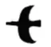

Symbol Grimoire

Raven RuneNotes/Warnings
Runic pictograph. Classified as Bird (Raven) in traditional runic pictography.
Type
Culture
Correspondances1
Entities1
Interpretation
Swift-moving intelligence and memory.
Runic Context
The raven pictograph embodies the twin faculties of intelligence and memory, recalling Odin's two ravens, Huginn ("Thought") and Muninn ("Memory"), who fly across the worlds each day and return to whisper all they have seen and heard. As a runic symbol, the raven signifies the capacity for far-reaching awareness, rapid cognition, and the retrieval of hidden knowledge from distant realms.